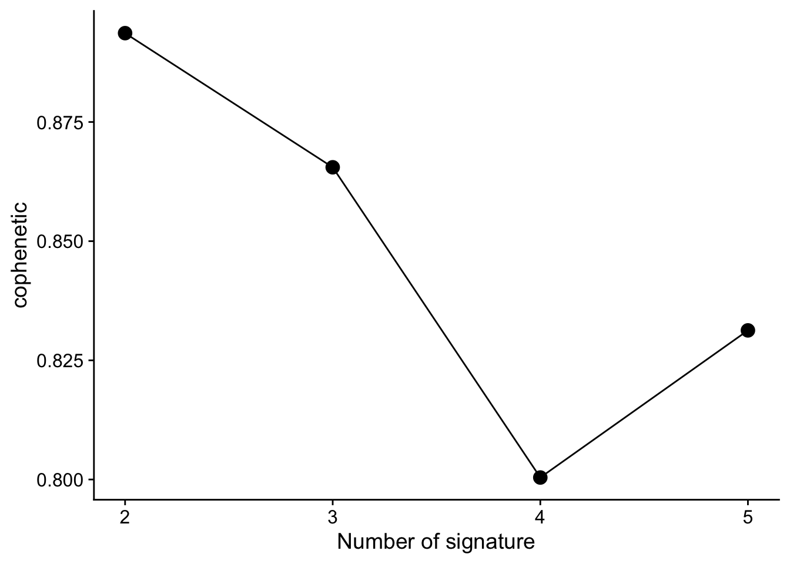

Chapter 2 COSMIC Signature Identification
In this chapter, we will introduce how to identify COSMIC signatures from records of variant calling data. The COSMIC signatures include three type of signatures: SBS, DBS and ID (short for INDEL).
The signature identification procedure has been divided into 3 steps:
- Read mutation data.
- Tally components: for SBS, it means classifying SBS records into 96 components (the most common case) and generate sample matrix.
- Extract signatures: estimate signature number and identify signatures.
2.1 Read Data
The input data should be in MAF format, it can be either a MAF file or a data.frame.
There is a famous R/Bioconductor package Maftools (Mayakonda et al. 2018) for analyzing MAF data.
Here, we use the example MAF file stored in Maftools as input and extract SBS signatures from the data.
Make sure
library(sigminer)before running the following code.
laml.maf <- system.file("extdata", "tcga_laml.maf.gz", package = "maftools", mustWork = TRUE)
laml <- read_maf(maf = laml.maf)
#> -Reading
#> -Validating
#> -Silent variants: 475
#> -Summarizing
#> -Processing clinical data
#> --Missing clinical data
#> -Finished in 0.559s elapsed (0.512s cpu)
laml
#> An object of class MAF
#> ID summary Mean Median
#> 1: NCBI_Build 37 NA NA
#> 2: Center genome.wustl.edu NA NA
#> 3: Samples 193 NA NA
#> 4: nGenes 1241 NA NA
#> 5: Frame_Shift_Del 52 0.269 0
#> 6: Frame_Shift_Ins 91 0.472 0
#> 7: In_Frame_Del 10 0.052 0
#> 8: In_Frame_Ins 42 0.218 0
#> 9: Missense_Mutation 1342 6.953 7
#> 10: Nonsense_Mutation 103 0.534 0
#> 11: Splice_Site 92 0.477 0
#> 12: total 1732 8.974 9The laml is a MAF object. The MAF class is exported from Maftools to sigminer. So laml can be directly use functions provided by Maftools.
As a MAF object, the mutation records are stored in slot data and maf.silent.
head(laml@data)
#> Hugo_Symbol Entrez_Gene_Id Center NCBI_Build Chromosome Start_Position End_Position Strand Variant_Classification
#> 1: ABCA10 10349 genome.wustl.edu 37 17 67170917 67170917 + Splice_Site
#> 2: ABCA4 24 genome.wustl.edu 37 1 94490594 94490594 + Missense_Mutation
#> 3: ABCB11 8647 genome.wustl.edu 37 2 169780250 169780250 + Missense_Mutation
#> 4: ABCC3 8714 genome.wustl.edu 37 17 48760974 48760974 + Missense_Mutation
#> 5: ABCF1 23 genome.wustl.edu 37 6 30554429 30554429 + Missense_Mutation
#> 6: ABCG4 64137 genome.wustl.edu 37 11 119031351 119031351 + Missense_Mutation
#> Variant_Type Reference_Allele Tumor_Seq_Allele1 Tumor_Seq_Allele2 Tumor_Sample_Barcode Protein_Change i_TumorVAF_WU
#> 1: SNP T T C TCGA-AB-2988 p.K960R 45.66000
#> 2: SNP C C T TCGA-AB-2869 p.R1517H 38.12000
#> 3: SNP G G A TCGA-AB-3009 p.A1283V 46.97218
#> 4: SNP C C T TCGA-AB-2887 p.P1271S 56.41000
#> 5: SNP G G A TCGA-AB-2920 p.G658S 40.95000
#> 6: SNP A A G TCGA-AB-2934 p.Y567C 32.84000
#> i_transcript_name
#> 1: NM_080282.3
#> 2: NM_000350.2
#> 3: NM_003742.2
#> 4: NM_003786.1
#> 5: NM_001025091.1
#> 6: NM_022169.1
head(laml@maf.silent)
#> Hugo_Symbol Entrez_Gene_Id Center NCBI_Build Chromosome Start_Position End_Position Strand Variant_Classification
#> 1: ABCC11 85320 genome.wustl.edu 37 16 48244997 48244997 + Silent
#> 2: ACAN 176 genome.wustl.edu 37 15 89401084 89401084 + Silent
#> 3: ACAT1 38 genome.wustl.edu 37 11 108009744 108009744 + Silent
#> 4: ACCN2 41 genome.wustl.edu 37 12 50452780 50452780 + Silent
#> 5: ACTA2 59 genome.wustl.edu 37 10 90695109 90695109 + Silent
#> 6: ACTL9 284382 genome.wustl.edu 37 19 8808551 8808551 + Silent
#> Variant_Type Reference_Allele Tumor_Seq_Allele1 Tumor_Seq_Allele2 Tumor_Sample_Barcode Protein_Change i_TumorVAF_WU
#> 1: SNP G G A TCGA-AB-2830 p.I490I 34.2700000
#> 2: SNP C C T TCGA-AB-2898 p.S1756S 38.3000000
#> 3: SNP T T G TCGA-AB-2887 p.T185T 49.0400000
#> 4: SNP C C G TCGA-AB-3009 p.L77L 48.1000000
#> 5: SNP C C T TCGA-AB-2973 p.P335P 0.2012072
#> 6: SNP G G A TCGA-AB-2936 p.F167F 46.1500000
#> i_transcript_name
#> 1: NM_032583.3
#> 2: NM_013227.2
#> 3: NM_000019.3
#> 4: NM_020039.2
#> 5: NM_001613.1
#> 6: NM_178525.3The data slot contains non-silent variants, and the maf.silent slot contains silent variants.
Default uses Variant Classifications with High/Moderate variant consequences as non-silent variants. http://asia.ensembl.org/Help/Glossary?id=535: “Frame_Shift_Del”, “Frame_Shift_Ins”, “Splice_Site”, “Translation_Start_Site”,“Nonsense_Mutation”, “Nonstop_Mutation”, “In_Frame_Del”,“In_Frame_Ins”, “Missense_Mutation” (see ?read_maf). If you want to change, please set vc_nonSyn option.
Other slots in MAF object are summary data either by sample or gene/variant type etc.
2.2 Tally Components
2.2.1 The most common 96 components
According to 3-nucleotide context (mutated base, 5’ and 3’ adjacent bases) and base complementary pairing principle, we can divide all SBS mutations into 96 mutation types. We call each mutation type as a component here.
This classification is based the six substitution subtypes: C>A, C>G, C>T, T>A, T>C, and T>G (all substitutions are referred to by the pyrimidine of the mutated Watson—Crick base pair). Further, each of the substitutions is examined by incorporating information on the bases immediately 5’ and 3’ to each mutated base generating 96 possible mutation types (6 types of substitution x 4 types of 5’ base x 4 types of 3’ base).
We tally components in each sample, and generate a sample-by-component matrix.
mt_tally <- sig_tally(
laml,
ref_genome = "BSgenome.Hsapiens.UCSC.hg19",
useSyn = TRUE
)
#> ℹ [2020-08-10 10:31:58]: Started.
#>
#> Attaching package: 'S4Vectors'
#> The following object is masked from 'package:NMF':
#>
#> nrun
#> The following object is masked from 'package:pkgmaker':
#>
#> new2
#> The following object is masked from 'package:base':
#>
#> expand.grid
#>
#> Attaching package: 'Biostrings'
#> The following object is masked from 'package:base':
#>
#> strsplit
#> ✓ [2020-08-10 10:32:04]: Reference genome loaded.
#> ✓ [2020-08-10 10:32:04]: Variants from MAF object queried.
#> ✓ [2020-08-10 10:32:04]: Chromosome names checked.
#> ✓ [2020-08-10 10:32:04]: Sex chromosomes properly handled.
#> ✓ [2020-08-10 10:32:04]: Variant start and end position checked.
#> ✓ [2020-08-10 10:32:04]: Variant data for matrix generation preprocessed.
#> ℹ [2020-08-10 10:32:04]: SBS matrix generation - start.
#> ℹ [2020-08-10 10:32:04]: Extracting 5' and 3' adjacent bases.
#> ℹ [2020-08-10 10:32:06]: Extracting +/- 20bp around mutated bases for background C>T estimation.
#> ℹ [2020-08-10 10:32:07]: Estimating APOBEC enrichment scores.
#> ℹ [2020-08-10 10:32:07]: Performing one-way Fisher's test for APOBEC enrichment.
#> ✓ [2020-08-10 10:32:07]: APOBEC related mutations are enriched in 3.297% of samples (APOBEC enrichment score > 2; 6 of 182 samples)
#> ℹ [2020-08-10 10:32:07]: Creating SBS sample-by-component matrices.
#> ✓ [2020-08-10 10:32:07]: SBS-6 matrix created.
#> ✓ [2020-08-10 10:32:07]: SBS-96 matrix created.
#> ✓ [2020-08-10 10:32:07]: SBS-1536 matrix created.
#> ℹ [2020-08-10 10:32:07]: Return SBS-96 as major matrix.
#> ✓ [2020-08-10 10:32:07]: Done.
#> ℹ [2020-08-10 10:32:07]: 8.778 secs elapsed.mt_tally$nmf_matrix[1:5, 1:5]
#> A[T>C]A C[T>C]A G[T>C]A T[T>C]A A[C>T]A
#> TCGA-AB-2802 0 0 0 0 0
#> TCGA-AB-2803 0 0 0 0 2
#> TCGA-AB-2804 0 0 0 0 2
#> TCGA-AB-2805 0 0 0 0 0
#> TCGA-AB-2806 0 0 0 0 0We use notion left[ref>mut]right to mark each component, e.g. C[T>G]A means a base T with 5’ adjacent base C and 3’ adjacent base A is mutated to base G.
2.2.2 Other Situations
Above we show the most common SBS classifications, there are other situations supported by sigminer, including other classifications for SBS records and other mutation types (DBS and ID). All situations about SBS, DBS and ID signatures are well documented in wiki of SigProfilerMatrixGenerator package.
2.2.2.1 Other SBS classifications
After sig_tally() called, the most used matrix is store in nmf_matrix, and all matrices generated by sigminer are stored in all_matrices.
str(mt_tally$all_matrices, max.level = 1)
#> List of 3
#> $ SBS_6 : int [1:193, 1:6] 1 0 0 2 1 0 1 1 2 2 ...
#> ..- attr(*, "dimnames")=List of 2
#> $ SBS_96 : int [1:193, 1:96] 0 0 0 0 0 0 1 0 1 0 ...
#> ..- attr(*, "dimnames")=List of 2
#> $ SBS_1536: int [1:193, 1:1536] 0 0 0 0 0 0 0 0 0 0 ...
#> ..- attr(*, "dimnames")=List of 2If you add the strand classification, all matrices can be generated by sigminer will return.
mt_tally2 <- sig_tally(
laml,
ref_genome = "BSgenome.Hsapiens.UCSC.hg19",
useSyn = TRUE, add_trans_bias = TRUE
)
#> ℹ [2020-08-10 10:32:08]: Started.
#> ✓ [2020-08-10 10:32:08]: Reference genome loaded.
#> ✓ [2020-08-10 10:32:08]: Variants from MAF object queried.
#> ✓ [2020-08-10 10:32:08]: Chromosome names checked.
#> ✓ [2020-08-10 10:32:08]: Sex chromosomes properly handled.
#> ✓ [2020-08-10 10:32:08]: Variant start and end position checked.
#> ✓ [2020-08-10 10:32:08]: Variant data for matrix generation preprocessed.
#> ℹ [2020-08-10 10:32:08]: SBS matrix generation - start.
#> ℹ [2020-08-10 10:32:08]: Extracting 5' and 3' adjacent bases.
#> ℹ [2020-08-10 10:32:08]: Extracting +/- 20bp around mutated bases for background C>T estimation.
#> ℹ [2020-08-10 10:32:09]: Estimating APOBEC enrichment scores.
#> ℹ [2020-08-10 10:32:09]: Performing one-way Fisher's test for APOBEC enrichment.
#> ✓ [2020-08-10 10:32:09]: APOBEC related mutations are enriched in 3.297% of samples (APOBEC enrichment score > 2; 6 of 182 samples)
#> ℹ [2020-08-10 10:32:09]: Creating SBS sample-by-component matrices.
#> ✓ [2020-08-10 10:32:09]: SBS-6 matrix created.
#> ✓ [2020-08-10 10:32:09]: SBS-96 matrix created.
#> ✓ [2020-08-10 10:32:09]: SBS-1536 matrix created.
#> ✓ [2020-08-10 10:32:09]: SBS-24 (6x4) matrix created.
#> ✓ [2020-08-10 10:32:09]: SBS-384 (96x4) matrix created.
#> ✓ [2020-08-10 10:32:09]: SBS-6144 (1536x4) matrix created.
#> ℹ [2020-08-10 10:32:09]: Return SBS-384 as major matrix.
#> ✓ [2020-08-10 10:32:09]: Done.
#> ℹ [2020-08-10 10:32:09]: 1.447 secs elapsed.
str(mt_tally2$all_matrices, max.level = 1)
#> List of 6
#> $ SBS_6 : int [1:193, 1:6] 1 0 0 2 1 0 1 1 2 2 ...
#> ..- attr(*, "dimnames")=List of 2
#> $ SBS_24 : int [1:193, 1:24] 1 0 0 1 1 0 0 1 1 1 ...
#> ..- attr(*, "dimnames")=List of 2
#> $ SBS_96 : int [1:193, 1:96] 0 0 0 0 0 0 1 0 1 0 ...
#> ..- attr(*, "dimnames")=List of 2
#> $ SBS_384 : int [1:193, 1:384] 0 0 0 0 0 0 0 0 0 0 ...
#> ..- attr(*, "dimnames")=List of 2
#> $ SBS_1536: int [1:193, 1:1536] 0 0 0 0 0 0 0 0 0 0 ...
#> ..- attr(*, "dimnames")=List of 2
#> $ SBS_6144: int [1:193, 1:6144] 0 0 0 0 0 0 0 0 0 0 ...
#> ..- attr(*, "dimnames")=List of 22.2.2.2 DBS and ID components
If you want to generate DBS or ID matrices, just modify the mode option.
mt_tally_DBS <- sig_tally(
laml,
ref_genome = "BSgenome.Hsapiens.UCSC.hg19",
useSyn = TRUE,
mode = "DBS",
add_trans_bias = TRUE
)
#> ℹ [2020-08-10 10:32:09]: Started.
#> ✓ [2020-08-10 10:32:09]: Reference genome loaded.
#> ✓ [2020-08-10 10:32:09]: Variants from MAF object queried.
#> ✓ [2020-08-10 10:32:09]: Chromosome names checked.
#> ✓ [2020-08-10 10:32:09]: Sex chromosomes properly handled.
#> ✓ [2020-08-10 10:32:09]: Variant start and end position checked.
#> ✓ [2020-08-10 10:32:09]: Variant data for matrix generation preprocessed.
#> ℹ [2020-08-10 10:32:09]: DBS matrix generation - start.
#> ℹ [2020-08-10 10:32:09]: Searching DBS records...
#> ✓ [2020-08-10 10:32:11]: Done.
#> x [2020-08-10 10:32:11]: Zero DBSs to analyze!
#> Error in send_stop("Zero DBSs to analyze!"):
#> ℹ [2020-08-10 10:32:11]: 1.516 secs elapsed.
str(mt_tally_DBS$all_matrices, max.level = 1)
#> Error in str(mt_tally_DBS$all_matrices, max.level = 1): object 'mt_tally_DBS' not foundProgram will stop if no records to analyze.
Let’s see ID records.
mt_tally_ID <- sig_tally(
laml,
ref_genome = "BSgenome.Hsapiens.UCSC.hg19",
useSyn = TRUE,
mode = "ID",
add_trans_bias = TRUE
)
#> ℹ [2020-08-10 10:32:11]: Started.
#> ✓ [2020-08-10 10:32:11]: Reference genome loaded.
#> ✓ [2020-08-10 10:32:11]: Variants from MAF object queried.
#> ✓ [2020-08-10 10:32:11]: Chromosome names checked.
#> ✓ [2020-08-10 10:32:11]: Sex chromosomes properly handled.
#> ✓ [2020-08-10 10:32:11]: Variant start and end position checked.
#> ✓ [2020-08-10 10:32:11]: Variant data for matrix generation preprocessed.
#> ℹ [2020-08-10 10:32:11]: INDEL matrix generation - start.
#> ✓ [2020-08-10 10:32:12]: Reference sequences queried from genome.
#> ✓ [2020-08-10 10:32:12]: INDEL length extracted.
#> ✓ [2020-08-10 10:32:12]: Adjacent copies counted.
#> ✓ [2020-08-10 10:32:12]: Microhomology size calculated.
#> ✓ [2020-08-10 10:32:12]: INDEL records classified into different components (types).
#> ✓ [2020-08-10 10:32:12]: ID-28 matrix created.
#> ✓ [2020-08-10 10:32:12]: ID-83 matrix created.
#> ✓ [2020-08-10 10:32:12]: ID-415 matrix created.
#> ℹ [2020-08-10 10:32:12]: Return ID-415 as major matrix.
#> ✓ [2020-08-10 10:32:12]: Done.
#> ℹ [2020-08-10 10:32:12]: 1.053 secs elapsed.
str(mt_tally_ID$all_matrices, max.level = 1)
#> List of 3
#> $ ID_28 : int [1:193, 1:28] 0 0 0 0 0 0 0 0 0 0 ...
#> ..- attr(*, "dimnames")=List of 2
#> $ ID_83 : int [1:193, 1:83] 0 0 0 0 0 0 0 0 0 0 ...
#> ..- attr(*, "dimnames")=List of 2
#> $ ID_415:'data.frame': 193 obs. of 415 variables:2.2.2.3 Take togother
If you want to get all matrices for SBS, DBS and ID at the same time, you don’t need to write a for loop or type three times to do this.
Just set mode='ALL', sigminer will do it for you.
mt_tally_all <- sig_tally(
laml,
ref_genome = "BSgenome.Hsapiens.UCSC.hg19",
useSyn = TRUE,
mode = "ALL",
add_trans_bias = TRUE
)
#> ℹ [2020-08-10 10:32:13]: Started.
#> ✓ [2020-08-10 10:32:13]: Reference genome loaded.
#> ✓ [2020-08-10 10:32:13]: Variants from MAF object queried.
#> ✓ [2020-08-10 10:32:13]: Chromosome names checked.
#> ✓ [2020-08-10 10:32:13]: Sex chromosomes properly handled.
#> ✓ [2020-08-10 10:32:13]: Variant start and end position checked.
#> ✓ [2020-08-10 10:32:13]: Variant data for matrix generation preprocessed.
#> ℹ [2020-08-10 10:32:13]: All types of matrices generation - start.
#> ℹ [2020-08-10 10:32:13]: SBS matrix generation - start.
#> ℹ [2020-08-10 10:32:13]: Extracting 5' and 3' adjacent bases.
#> ℹ [2020-08-10 10:32:13]: Extracting +/- 20bp around mutated bases for background C>T estimation.
#> ℹ [2020-08-10 10:32:14]: Estimating APOBEC enrichment scores.
#> ℹ [2020-08-10 10:32:14]: Performing one-way Fisher's test for APOBEC enrichment.
#> ✓ [2020-08-10 10:32:14]: APOBEC related mutations are enriched in 3.297% of samples (APOBEC enrichment score > 2; 6 of 182 samples)
#> ℹ [2020-08-10 10:32:14]: Creating SBS sample-by-component matrices.
#> ✓ [2020-08-10 10:32:14]: SBS-6 matrix created.
#> ✓ [2020-08-10 10:32:14]: SBS-96 matrix created.
#> ✓ [2020-08-10 10:32:14]: SBS-1536 matrix created.
#> ✓ [2020-08-10 10:32:14]: SBS-24 (6x4) matrix created.
#> ✓ [2020-08-10 10:32:14]: SBS-384 (96x4) matrix created.
#> ✓ [2020-08-10 10:32:14]: SBS-6144 (1536x4) matrix created.
#> ℹ [2020-08-10 10:32:14]: Return SBS-384 as major matrix.
#> ℹ [2020-08-10 10:32:14]: DBS matrix generation - start.
#> ℹ [2020-08-10 10:32:14]: Searching DBS records...
#> ✓ [2020-08-10 10:32:15]: Done.
#> x [2020-08-10 10:32:15]: Zero DBSs to analyze!
#> ℹ [2020-08-10 10:32:15]: INDEL matrix generation - start.
#> ✓ [2020-08-10 10:32:16]: Reference sequences queried from genome.
#> ✓ [2020-08-10 10:32:16]: INDEL length extracted.
#> ✓ [2020-08-10 10:32:16]: Adjacent copies counted.
#> ✓ [2020-08-10 10:32:16]: Microhomology size calculated.
#> ✓ [2020-08-10 10:32:16]: INDEL records classified into different components (types).
#> ✓ [2020-08-10 10:32:16]: ID-28 matrix created.
#> ✓ [2020-08-10 10:32:16]: ID-83 matrix created.
#> ✓ [2020-08-10 10:32:16]: ID-415 matrix created.
#> ℹ [2020-08-10 10:32:16]: Return ID-415 as major matrix.
#> ℹ [2020-08-10 10:32:16]: All types of matrices generation (APOBEC scores included) - end.
#> ✓ [2020-08-10 10:32:16]: Done.
#> ℹ [2020-08-10 10:32:16]: 3.239 secs elapsed.
str(mt_tally_all, max.level = 1)
#> List of 10
#> $ SBS_6 : int [1:193, 1:6] 1 0 0 2 1 0 1 1 2 2 ...
#> ..- attr(*, "dimnames")=List of 2
#> $ SBS_24 : int [1:193, 1:24] 1 0 0 1 1 0 0 1 1 1 ...
#> ..- attr(*, "dimnames")=List of 2
#> $ SBS_96 : int [1:193, 1:96] 0 0 0 0 0 0 1 0 1 0 ...
#> ..- attr(*, "dimnames")=List of 2
#> $ SBS_384 : int [1:193, 1:384] 0 0 0 0 0 0 0 0 0 0 ...
#> ..- attr(*, "dimnames")=List of 2
#> $ SBS_1536 : int [1:193, 1:1536] 0 0 0 0 0 0 0 0 0 0 ...
#> ..- attr(*, "dimnames")=List of 2
#> $ SBS_6144 : int [1:193, 1:6144] 0 0 0 0 0 0 0 0 0 0 ...
#> ..- attr(*, "dimnames")=List of 2
#> $ ID_28 : int [1:193, 1:28] 0 0 0 0 0 0 0 0 0 0 ...
#> ..- attr(*, "dimnames")=List of 2
#> $ ID_83 : int [1:193, 1:83] 0 0 0 0 0 0 0 0 0 0 ...
#> ..- attr(*, "dimnames")=List of 2
#> $ ID_415 :'data.frame': 193 obs. of 415 variables:
#> $ APOBEC_scores:Classes 'data.table' and 'data.frame': 182 obs. of 44 variables:
#> ..- attr(*, ".internal.selfref")=<externalptr>
#> ..- attr(*, "index")= int(0)
#> .. ..- attr(*, "__APOBEC_Enriched")= int [1:182] 106 147 5 6 8 9 10 11 12 13 ...Please note, in this case, just a list containing matrices will return.
2.3 Extract Signatures
There are two methods can be used to implement signature extraction.
- Firstly estimate signature number and then extract signatures. This method is powered by NMF package (Gaujoux and Seoighe 2010).
- Auto-extract signatures by automatic relevance determination technique in nonnegative matrix factorization (Tan and Févotte 2012), the code is implemented by SignatureAnalyzer (Kim et al. 2016) and exported to sigminer.
2.3.1 Method 1: Estimate Signature Number
To estimate signature number, we firstly run NMF for multiple times and calculate some measures from the results, then select the best signature number based on the measure vs. signature number plot.
This is done by sig_estimate() function. Let’s try signature number 2-5. For simplicity, we just run NMF twice for each signature number. We use 4 cores to speed up the computation.
mt_est <- sig_estimate(mt_tally$nmf_matrix,
range = 2:5,
nrun = 2,
use_random = TRUE,
cores = 4,
pConstant = 1e-13,
verbose = TRUE
)
pConstantoption is set to avoid errors raised by NMF package.
We can show signature number survey for different measures by show_sig_number_survey2().
## You can also select the measures to show
## by 'what' option
show_sig_number_survey2(mt_est$survey, mt_est$survey.random)
For the details of all the measures above, please read Gaujoux and Seoighe (2010) and vignette of R package NMF.
Typically, measure cophenetic is used for determing the signature number. We can easily generate an elbow plot with functionshow_sig_number_survey()`.

Cophenetic indicates the robustness of consensus matrix clustering. In this situation, 2 or 3 is good.
The most common approach is to use the cophenetic correlation coefficient. Brunet et al. suggested choosing the smallest value of r for which this coefficient starts decreasing. (Gaujoux and Seoighe 2010)
However, there are no gold standard to determine the signature number. Sometimes, you should consider multiple measures. Remember, the most important thing is that you should have a good biological explanation for each signature. The best solution in study may not be the best solution in math.
2.3.2 Method 1: Extract Signatures
After selecting a proper signature, you can now extract signatures. In general, use 30~50 NMF runs will get a robust result.
2.3.3 Method 2: Auto-extract
If you have no idea to select a optimal signature number from technologies above, you can try auto-extract feature here. It uses a bayesian variant of NMF algorithm. You need to set a maximum signature number (default is 25) and run times to get the result.
At default, the code will use ‘robust’ strategy to return the result (see strategy option). It means that if you run 10 times and 6 of them return 4 signatures, then the optimal result with 4 signatures will be returned.
The info of each run can be given as:
mt_sig2$Raw$summary_run
#> # A tibble: 10 x 4
#> Run K posterior file
#> <int> <int> <dbl> <chr>
#> 1 8 2 1822. /var/folders/mx/rfkl27z90c96wbmn3_kjk8c80000gn/T//RtmpTrCKrZ/BayesNMF.8.rds
#> 2 6 2 1815. /var/folders/mx/rfkl27z90c96wbmn3_kjk8c80000gn/T//RtmpTrCKrZ/BayesNMF.6.rds
#> 3 9 3 1793. /var/folders/mx/rfkl27z90c96wbmn3_kjk8c80000gn/T//RtmpTrCKrZ/BayesNMF.9.rds
#> 4 2 2 1789. /var/folders/mx/rfkl27z90c96wbmn3_kjk8c80000gn/T//RtmpTrCKrZ/BayesNMF.2.rds
#> 5 5 2 1785. /var/folders/mx/rfkl27z90c96wbmn3_kjk8c80000gn/T//RtmpTrCKrZ/BayesNMF.5.rds
#> 6 3 3 1766. /var/folders/mx/rfkl27z90c96wbmn3_kjk8c80000gn/T//RtmpTrCKrZ/BayesNMF.3.rds
#> 7 10 2 1764. /var/folders/mx/rfkl27z90c96wbmn3_kjk8c80000gn/T//RtmpTrCKrZ/BayesNMF.10.rds
#> 8 1 4 1740. /var/folders/mx/rfkl27z90c96wbmn3_kjk8c80000gn/T//RtmpTrCKrZ/BayesNMF.1.rds
#> 9 4 3 1718. /var/folders/mx/rfkl27z90c96wbmn3_kjk8c80000gn/T//RtmpTrCKrZ/BayesNMF.4.rds
#> 10 7 3 1706. /var/folders/mx/rfkl27z90c96wbmn3_kjk8c80000gn/T//RtmpTrCKrZ/BayesNMF.7.rds2.4 Match Signatures
After extracting signatures, we need to know their etiologies. This can be done by comparing the identified signatures and reference signatures from COSMIC database.
sim <- get_sig_similarity(mt_sig)
#> -Comparing against COSMIC signatures
#> ------------------------------------
#> --Found Sig1 most similar to COSMIC_1
#> Aetiology: spontaneous deamination of 5-methylcytosine [similarity: 0.871]
#> --Found Sig2 most similar to COSMIC_1
#> Aetiology: spontaneous deamination of 5-methylcytosine [similarity: 0.841]
#> --Found Sig3 most similar to COSMIC_1
#> Aetiology: spontaneous deamination of 5-methylcytosine [similarity: 0.776]
#> ------------------------------------
#> Return result invisiblely.The result object sim is a list.
str(sim)
#> List of 4
#> $ similarity : num [1:3, 1:30] 0.871 0.841 0.776 0.221 0.049 0.211 0.277 0.345 0.286 0.217 ...
#> ..- attr(*, "dimnames")=List of 2
#> .. ..$ : chr [1:3] "Sig1" "Sig2" "Sig3"
#> .. ..$ : chr [1:30] "COSMIC_1" "COSMIC_2" "COSMIC_3" "COSMIC_4" ...
#> $ aetiology_db:List of 1
#> ..$ : chr [1:30] "spontaneous deamination of 5-methylcytosine" "APOBEC Cytidine Deaminase (C>T)" "defects in DNA-DSB repair by HR" "exposure to tobacco (smoking) mutagens" ...
#> $ best_match :List of 3
#> ..$ Sig1:List of 2
#> .. ..$ aetiology : chr "spontaneous deamination of 5-methylcytosine"
#> .. ..$ best_match: chr "Best match: COSMIC_1 [similarity: 0.871]"
#> ..$ Sig2:List of 2
#> .. ..$ aetiology : chr "spontaneous deamination of 5-methylcytosine"
#> .. ..$ best_match: chr "Best match: COSMIC_1 [similarity: 0.841]"
#> ..$ Sig3:List of 2
#> .. ..$ aetiology : chr "spontaneous deamination of 5-methylcytosine"
#> .. ..$ best_match: chr "Best match: COSMIC_1 [similarity: 0.776]"
#> $ rss : num [1:3, 1:30] 0.016 0.0191 0.0277 0.2517 0.2901 ...
#> ..- attr(*, "dimnames")=List of 2
#> .. ..$ : chr [1:3] "Sig1" "Sig2" "Sig3"
#> .. ..$ : chr [1:30] "COSMIC_1" "COSMIC_2" "COSMIC_3" "COSMIC_4" ...
#> - attr(*, "class")= chr [1:2] "similarity" "list"From the result we can see that only one signature is clear. If you find unknow signatures in your study, you should explore the etiologies by other analyses and even experiments.
The similarity matrix can be plotted.
You can also try the COSMIC signature database V3 with:
sim_v3 <- get_sig_similarity(mt_sig, sig_db = "SBS")
#> -Comparing against COSMIC signatures
#> ------------------------------------
#> --Found Sig1 most similar to SBS1
#> Aetiology: spontaneous or enzymatic deamination of 5-methylcytosine [similarity: 0.844]
#> --Found Sig2 most similar to SBS1
#> Aetiology: spontaneous or enzymatic deamination of 5-methylcytosine [similarity: 0.782]
#> --Found Sig3 most similar to SBS6
#> Aetiology: defective DNA mismatch repair [similarity: 0.694]
#> ------------------------------------
#> Return result invisiblely.2.5 Operate Signature
The result of sig_extract() or sig_auto_extract() is a list with Signature class. You can use $ or use operation function to obtain the data stored in it.
To get the signature matrix:
# Or mt_sig$Signature
sig_signature(mt_sig)[1:5, ]
#> Sig1 Sig2 Sig3
#> A[T>C]A 4.347168e-02 2.419528e-14 5.443553e-19
#> C[T>C]A 5.587475e-19 1.208329e-14 1.030792e-02
#> G[T>C]A 4.699434e-14 3.233990e-03 5.602686e-03
#> T[T>C]A 3.498551e-15 4.448091e-15 2.945119e-03
#> A[C>T]A 2.003145e-14 7.513116e-02 1.388966e-14To get signature exposure matrix:
# Or mt_sig$Exposure
sig_exposure(mt_sig)[, 1:5]
#> TCGA-AB-2802 TCGA-AB-2803 TCGA-AB-2804 TCGA-AB-2805 TCGA-AB-2806
#> Sig1 5.967386 4.220468 6.470106e-12 7.828328e+00 4.979286
#> Sig2 1.490521 7.651933 7.000000e+00 6.171672e+00 5.190129
#> Sig3 2.542092 2.127600 2.134479e-12 4.303842e-13 4.830585get_sig_exposure() may be more useful, it can be used to return a data.frame and set an exposure threshold.
get_sig_exposure(mt_sig)
#> sample Sig1 Sig2 Sig3
#> 1: TCGA-AB-2802 5.967386e+00 1.490521e+00 2.542092e+00
#> 2: TCGA-AB-2803 4.220468e+00 7.651933e+00 2.127600e+00
#> 3: TCGA-AB-2804 6.470106e-12 7.000000e+00 2.134479e-12
#> 4: TCGA-AB-2805 7.828328e+00 6.171672e+00 4.303842e-13
#> 5: TCGA-AB-2806 4.979286e+00 5.190129e+00 4.830585e+00
#> ---
#> 189: TCGA-AB-3007 7.000000e+00 2.234347e-12 6.506815e-12
#> 190: TCGA-AB-3008 4.000000e+00 1.393582e-11 1.371823e-11
#> 191: TCGA-AB-3009 9.664115e+00 9.658138e+00 1.667775e+01
#> 192: TCGA-AB-3011 6.000000e+00 4.721216e-12 2.653254e-12
#> 193: TCGA-AB-3012 4.657863e+00 1.242847e-11 2.342137e+00For plotting signature profile and exposure profile, please go to chapter 8.
For optimizing signature exposure, please use sig_fit().
References
Gaujoux, Renaud, and Cathal Seoighe. 2010. “A Flexible R Package for Nonnegative Matrix Factorization.” BMC Bioinformatics 11 (1). Springer: 367.
Kim, Jaegil, Kent W Mouw, Paz Polak, Lior Z Braunstein, Atanas Kamburov, Grace Tiao, David J Kwiatkowski, et al. 2016. “Somatic Ercc2 Mutations Are Associated with a Distinct Genomic Signature in Urothelial Tumors.” Nature Genetics 48 (6). Nature Publishing Group: 600.
Mayakonda, Anand, De-Chen Lin, Yassen Assenov, Christoph Plass, and H Phillip Koeffler. 2018. “Maftools: Efficient and Comprehensive Analysis of Somatic Variants in Cancer.” Genome Research 28 (11). Cold Spring Harbor Lab: 1747–56.
Tan, Vincent YF, and Cédric Févotte. 2012. “Automatic Relevance Determination in Nonnegative Matrix Factorization with the/Spl Beta/-Divergence.” IEEE Transactions on Pattern Analysis and Machine Intelligence 35 (7). IEEE: 1592–1605.